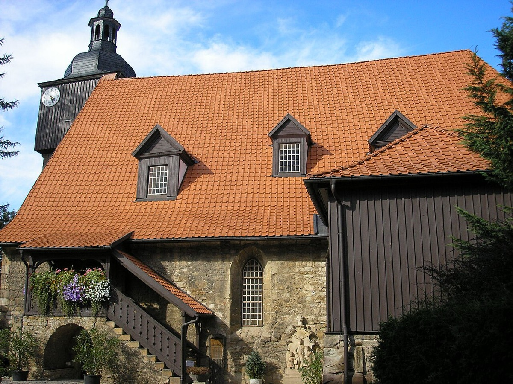

Marriage to Maria Barbara at Dornheim

The founding of the Bach family begins, like so much on this timeline, with an entry in an account book. In August 1707 the estate of a maternal uncle delivered Sebastian a legacy of 50 gulden — more than half a year's salary at his new Mühlhausen post, and, in the plain arithmetic of a young musician's life, the difference between courtship and marriage. Two months later, on 17 October 1707, in the small village church of Dornheim outside Arnstadt, Johann Sebastian Bach married Maria Barbara Bach. The officiant was a family friend; the fee, the parish register notes with its own quiet charm, was waived.
She was his second cousin, and the shared surname is not a curiosity but the whole context. Maria Barbara was a daughter of the late Johann Michael Bach of Gehren — brother of the "profound" Eisenach cousin, and himself a fine composer whose works Sebastian performed and preserved. Marrying a Bach meant the clan reinforcing itself, as it had for generations: she knew the trade from birth — its households, its hardships, the rhythms of a working musician's year — and brought no illusions about what life beside an organ loft entailed. She brought something else as well. Her father's manuscripts merged into her husband's library, a small dowry of repertoire passing along the family's internal channels, music marrying music in the most literal way the clan knew.
There may be a romance buried in the documents, though it survives only in the strangest form. A year earlier, the Arnstadt consistory had cited its organist for hosting an "unfamiliar maiden" to make music in the choir loft; tradition identifies her, plausibly but without proof, as Maria Barbara, then living in Arnstadt. If the identification holds, the era's one courtship comes down to us as a disciplinary citation for unauthorized music-making — which would make the Dornheim wedding the resolution of a complaint file, and is exactly the kind of documentary irony this timeline collects. The card keeps the flag honest: the loft citation is documented; the maiden's identity is tradition.
Around the marriage, the first Bach household took shape — anchored initially in the Divi Blasii organist's post at Mühlhausen, then carried within the year to Weimar, where it grew at the pace the era expected of it. Seven children came in twelve years: Catharina Dorothea in 1708, Wilhelm Friedemann in 1710, twins who died at birth in 1713, Carl Philipp Emanuel in 1714, Johann Christoph Friedrich among those that followed. Two of those names, Friedemann and Emanuel, will matter enormously to this timeline's later arcs — the sons whose fame would one day eclipse their father's, and through whose hands his manuscripts would pass to safety or to loss. The family track carries all of them forward from this village church. It also, the reader should know, already carries its terminus: the marriage begun at Dornheim ends at Cöthen, in July 1720, and that card is already written.
Why does a wedding warrant a card on a timeline of positions and works? Because Bach's composing life and household life were never separate operations, and this is the moment the second one comes into being. The household founded at Dornheim was an economy — of income and inheritance, of children who became pupils and copyists, of a wife from the trade who understood the trade's demands — and that economy formed the working conditions of everything that followed, from the Weimar organ works to the teaching books of the Cöthen years. Biographies that treat the family as background noise beneath the music have it backwards: the family was the infrastructure the music ran on. A 50-gulden legacy, a waived fee, a cousin who knew the life she was choosing — the material conditions again, quietly determining what posterity would receive.
Continue with the era essay: Mühlhausen: the mission statement, or turn to the year's public triumph: the printed cantata of 1708.
Dornheim parish register, 17 Oct 1707
Wolff, The Learned Musician, ch. 5
→ full bibliography & links